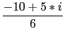
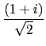
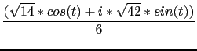

suivant: Tracé d'une quadrique :
monter: Les formes quadratiques
précédent: Tracé d'une conique :
Table des matières
Index
Réduction d'une conique : reduced_conic conique_reduite
conique_reduite a un ou deux arguments : l'expression d'une
conique et le vecteur de composantes les variables utilisées si il est
différent de [x,y].
conique_reduite renvoie une liste d'éléments :
- l'origine de la conique,
- la matrice d'un repère dans lequel
la conique est réduite,
- 0 ou 1 pour savoir si la conique est dégénérée
ou pas,
- l'équation réduite de la conique dans ce repère,
- un vecteur contenant son équation paramétrique ou ses équations
paramétriques lorsque la conique est composée de plusieurs nappes.
On tape :
conique_reduite(2*x^2+2*x*y+2*y^2+5*x+3,[x,y])
On obtient :
[[-5/3,5/6],[[-1/(sqrt(2)),1/(sqrt(2))],[-1/(sqrt(2)), -1/(sqrt(2))]],1,3*x^2+y^2+-7/6,[[(-10+5*i)/6+ (1/(sqrt(2))+(i)/(sqrt(2)))*((sqrt(14)*cos(` t`))/6+ ((i)*sqrt(42)*sin(t))/6),t,0,2*pi,(2*pi)/60]]]
La conique n'est pas dégénérée et a pour équation réduite :
3x2 + y2 - 7/6 = 0
dans le repère d'origine
-5/3 + 5*i/6 et d'axes parallèles
aux vecteurs (- 1, 1) et (- 1, - 1).
Son équation paramétrique est :
 + *
et por le dessin, le paramètre t varie de 0 à 2 avec un pas
tstep=2/60.
avec un pas
tstep=2/60.
Remarque :
Lorsque la conique est dégénérée en 1 ou 2 droite(s), chaque droite
n'est pas donné par son équation paramétrique mais par la liste
constituée par un vecteur normal à la droite et un point de la droite.
On tape :
conique_reduite(x^2-y^2+3*x+y+2)
On obtient :
[[(-3)/2,1/2],[[1,0],[0,1]],0,x^2-y^2, [[(-1+2*i)/(1-i),(1+2*i)/(1-i)], [(-1+2*i)/(1-i),(-1)/(1-i)]]]
suivant: Tracé d'une quadrique :
monter: Les formes quadratiques
précédent: Tracé d'une conique :
Table des matières
Index
Documentation de giac écrite par Renée De Graeve